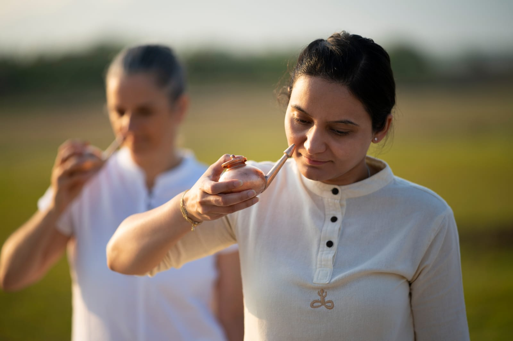

Isha Classical Practice
A classical yogic nasal cleansing process using warm saline water — one of the most powerful shatkarmas for respiratory health and clarity.
Enroll at Yogartha →What is Jala Neti?
Jala Neti is one of the six classical yogic shatkarmas — cleansing processes — that form an important foundation of the Hatha Yoga tradition. It involves passing warm saline water through the nasal passages using a specially designed copper neti pot, cleansing the nose, sinuses, and upper respiratory tract.
Practiced correctly and regularly, Jala Neti is one of the most powerful tools available for maintaining optimal respiratory health. It clears accumulated mucus and impurities, facilitates free nasal breathing, and has a profound impact on the clarity and balance of the nervous system.
As a Shatkarma (yogic cleansing technique), Jala Neti is not merely a physical hygiene practice — it is a preparation of the instrument (the body) for the subtler dimensions of yogic practice, particularly pranayama and meditation.
Benefits
Thoroughly cleanses the nasal passages of accumulated mucus, dust, pollen, and impurities, restoring free and easy nasal breathing.
Highly effective for chronic sinusitis, nasal congestion, allergies, and related conditions, often providing rapid and lasting relief.
Supports overall respiratory health by maintaining open airways, reducing susceptibility to infections, and improving lung function.
The nasal passages have a direct connection to the nervous system. Cleansing them has a calming and clarifying effect on the entire nervous system.
Open, clean nasal passages are essential for effective pranayama practice. Jala Neti is the ideal preparation for all breathing practices.
Regular Jala Neti practice reduces snoring, improves quality of sleep, and helps those who struggle with mouth breathing at night.
The Practice
Traditionally performed with a copper neti pot, which has inherent antibacterial properties. Reeta will guide you on acquiring the right pot.
Warm water with the correct concentration of non-iodized salt creates an isotonic solution that is gentle, safe, and highly effective for the nasal mucosa.
Precise head angle and breathing technique are essential for safe and effective practice. Reeta ensures every student masters the correct method.
A critical follow-up process using specific breathing to completely dry the nasal passages, preventing water retention after practice.
Once learned, Jala Neti takes only 5-10 minutes each morning and becomes an invaluable part of one's daily sadhana and hygiene routine.
Reeta will explain all safety guidelines and contraindications, ensuring the practice is appropriate and beneficial for each individual student.
Who Can Join
“The quality of your breath determines the quality of your life. When the pathways of breath are clean and open, life can flow at its full potential.”
— Sadhguru
Taught personally by Reeta at Yogartha, Dehradun. Learn this classical cleansing practice safely and correctly.